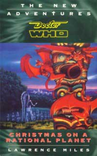

<html>

<head>
<meta http-equiv="Content-Language" content="en-gb">
<meta HTTP-EQUIV="Content-Type" CONTENT="text/html; charset=iso-8859-1">
<meta NAME="keywords" CONTENT="enter keywords here">
<meta NAME="description" CONTENT="enter a description here">
<meta NAME="author" CONTENT="enter your name here">
<meta NAME="generator" CONTENT="Microsoft FrontPage 5.0">
<meta name="ProgId" content="FrontPage.Editor.Document">
<title>The Cloister Library - Christmas on a Rational Planet</title>
</head>

<body TEXT="#CCCCFF" LINK="#99BAFF" VLINK="#9999FF" BGCOLOR="#5A0EC2" TOPMARGIN="10" LEFTMARGIN="10" RIGHTMARGIN="10" MARGINWIDTH="0" MARGINHEIGHT="0" onload="dynAnimation()">

<table WIDTH="100%" CELLPADDING="0" CELLSPACING="0" BORDER="0">
  <tr>
    <td WIDTH="100%" ALIGN="LEFT" VALIGN="TOP">
    
    <table WIDTH="100%" CELLPADDING="0" CELLSPACING="0" BORDER="0">
  <tr>
  
  <td WIDTH="20%" ALIGN="LEFT" VALIGN="TOP">
  <a onmouseover="document['fpAnimswapImgFP1'].imgRolln=document['fpAnimswapImgFP1'].src;document['fpAnimswapImgFP1'].src=document['fpAnimswapImgFP1'].lowsrc;" onmouseout="document['fpAnimswapImgFP1'].src=document['fpAnimswapImgFP1'].imgRolln" href="index.html#7doc">
  </a></td>
  
    <td WIDTH="80%" ALIGN="LEFT" VALIGN="TOP">
    
    <p align="center">

<B>
<FONT FACE="verdana,arial,geneva" SIZE="6">
Christmas on a Rational Planet
</FONT>
<BR>
<FONT FACE="verdana,arial,geneva" SIZE="4">
by
</FONT>
<FONT FACE="verdana,arial,geneva" SIZE="5">
Lawrence Miles
</FONT>
</B>
<FONT FACE="verdana,arial,geneva" SIZE="-1">
<BR>
<BR>
<B>Publisher:</B> Virgin

<BR>
<B>ISBN:</B> 0 426 20476 X 

</font>

</td>
</tr>
</table>

</font>
    <table WIDTH="100%" CELLPADDING="10" CELLSPACING="10" BORDER="0" style="border-collapse: collapse" bordercolor="#111111">
      <tr>
        <td WIDTH="100%" ALIGN="LEFT" VALIGN="TOP">
        <font face="verdana,arial,geneva" size="-1">
        <ul>
          <p>&nbsp;</p>

<B><P>BASIC PLOT<BR></B>
After a run in with an 'irrational' gynoid, Roz is stuck in the US town of Woodwicke at the end of the 18th century and forced to take desperate measures to summon the Doctor. But a man called Catcher has stolen something of hers and is using it to remake the universe in his own deranged image. Meanwhile, Chris is stuck in a rapidly disintegrating TARDIS with a psychic agent working for a secret organisation on a mission to destroy what they can't understand. Both these events are about to bring about the appearance of the supposedly mythical Carnival Queen. 

<B><P>DOCTOR<BR></B>
Seventh.
<B><P>COMPANIONS<BR></B>
Chris Cwej, Roz Forrester. 

<B><P>MATERIALISATION CIRCUIT<BR></B>
On p.4, the TARDIS makes a number of trips, visiting various seances and black magick happenings. Madame Blavatsky (1831-1891, probably in Russia) and Nostradamus (1503-1566, probably in France) are also visited. The TARDIS visits Arizona "in the last days of the American empire" (early 21st century) before ending up in Woodwicke on the 24th December, 1799. The TARDIS also travels into the Carnival Queen's irrational space on p.244, before going back to Woodwicke. At the end, the Doctor threatens to visit Doctor Johnson (1709-1784, in England). 

<B><P>PREPARATORY READING<BR></B>
A decent history of the French Revolution, The US War of Independence, the Reign of Terror and Napoleon's conquest of Italy would be a good start, as Lawrence Miles tends to assume we know a lot of this stuff. However, this is all strictly background stuff. There are also a lot of mentions of the events of <a href="sleepy.htm">SLEEPY</a> which might not make sense otherwise. 

<B><P>CONTINUITY REFERENCES<BR></B>
The big one. Rumour has it that Christmas on a Rational Planet references every single TV story. As you will see, this isn't far off (and I've probably missed a few): 

<P>P.1 Mentioning the Gallifreyan Looms of <a href="crucible.htm">Cat's Cradle: Time's Crucible</a> and the author Gustous Thripstead, mentioned in The Sunmakers. 

<P>P.3 A brief round up of events in <a href="sleepy.htm">SLEEPY</a>. 

<P>p.4 Mrs. Nostradamus knitted the Doctor's scarf according to The Ark in Space. 

<P>p.6 'The Witch Skulls of Peking' have a perfect pentagram burned into their forehead, possibly referencing the skull in Image of the Fendahl. Also, the 'Clockwork Fantastique' found in an 11th century village is a reference to the Monk's wristwatch from The Time Meddler. 

<P>p.7 Cardinal Scarlath and his 'world of one-eyed supernatural horrors' is more than likely another splinter of Scaroth from City of Death. 

<P>p.10 The TARDIS wardrobe, mentioned in The Androids of Tara and seen in The Twin Dilemma, is referred to. 

<P>p.11 The great fire from Heaven is the freighter from Earthshock which destroyed the dinosaurs. 

<P>p.12 One of the exhibits is "A man side by side with the reptiles", which could either be someone from Time-Flight (whose past sections are set during the Jurassic period) or either Grover and Whittaker from Operation Golden Age (from Invasion of the Dinosaurs). Something half-way between man and fish could be a Sea Devil. 

<P>p.13 The Library of St. John the Beheaded was first mentioned in 
<a href="allc.htm">All-Consuming Fire</a> and subsequently turned up in other books. Shango the Lightning God is one of the alternative names for the Doctor invented by Ben Aaronovitch in <a href="tran.htm">Transit</a>. 

<P>p.15 Professor James Rafferty, from <a href="dimer.htm">The Dimension Riders</a>, is quoted.

<P>p.19 The Doctor is said to have met Henry VIII and Cyrano de Bergerac - he claimed he met the former in The Sensorites and met the fictionalised version of the latter in the Mind Robber. 

<P>p.21 The Cult of Hecate was the main enemy in K-9 And Company. The architects of Peru were the Exxillons from Death to the Daleks. 

<P>p.24 Ponten Luna Sierra may be something to do with Ponten, a planet that makes battleships mentioned in The Ribos Operation (it's spelt 'Ponton' in the Universal Databank). PROBE is the organisation Liz worked for after leaving UNIT in the BBV series. 

<P>p.29 The numerical chanting to create Catcher's TARDIS is similar to the block transfer computations of Logopolis. 

<P>p.31 A pre-reference this, as mention is made of Roz's sister Leabie and her fortune, from <a href="sovi.htm">So Vile A Sin</a>. 

<P>p.36 Vraxoin is the drug from Nightmare of Eden 

<P>p.42 Helenic Atlanteans and Chronovores are from The Time Monster. The planet Mogar is from Trial of a Time Lord: The Ultimate Foe. Murtaugh is mentioned in <a href="orig.htm">Original Sin</a>. The Prion system is where Tigella and Zolfa-Thura are located (from Meglos). Mention of 'four-dimensional voodoo' presages Faction Paradox from
<a href="alie.htm">Alien Bodies</a>.

<P>p.47 The Argolin Holiday Complex is The Leisure Hive. The Doctor got his old TARDIS back in <a href="happy.htm">Happy Endings</a>, after losing it in <a href="bloo.htm">Blood Heat</a>. 

<P>p.48 The ineffable TARDIS translator from the Masque of Mandragora. A Terrulian diode charger is a cannabalised part of Styre's recharging equipment from the Sontaran Experiment. Pg 48 - The 'recoronation' of the Queen corrects the mention of a King in Battlefield, something which is also referred to in <a href="dyin.htm">The Dying Days</a>.

<P>p.49 The fault locator is from The Daleks. The PRIME computer is from the adverts done by Tom and Lalla in the 80s. The food machine was also first seen in The Daleks. Interface communicating with a pair of lips is a reference to one early rumour about a Doctor Who movie (coincident with the David Hasselhoff rumours) in which the TARDIS would have lips, and crack wise. 

<P>p.52 The Temple of Hermes and King Priam from the Myth Makers get a mention. The Doctor said he once took the 'holy ghanta' into safe keeping in The Abominable Snowmen. The 'mad Chinaman of Vienna' sounds like an oblique reference to The Celestial Toymaker but may not be. Discussions of the consequences of dropping a pebble into a pond form the basis of a very well remembered conversation in Remembrance of the Daleks.

<P>p.56 Interface talks about a cybernetic previous occupant of the TARDIS who was able to change shape, referring to Kamelion. 

<P>p.57 The 'Eighth Door section' of the TARDIS almost certainly relates to the Eighth Door to the Matrix in The Trial of a Time Lord and may also be an oblique reference, given that Chris deletes it, to why the Eye of Harmony is suddenly within the TARDIS in the Telemovie; the connection to the Matrix was destroyed and so something else had to happen in its place. Now if only Chris had been specifically seen to give it a human retinal scan...

<P>p.60 The famous TARDIS hatstand from innumerable stories gets a mention. 

<P>p.61 Chelonians are the mutant tortoises from <a href="highscie.htm">The Highest Science</a> and <a href="zamp.htm">Zamper</a>. 

<P>p.62 Artronics must have something to do with Artron Energy, a power source of TARDISes and first talked of in the Deadly Assassin. 

<P>p.64 Reference is made to someone being 'time sensitive', just like the Tharils in Warrior's Gate. The church at Hodcombe from the Awakening also gets a mention. 

<P>p.65 Some pretty explicit references to the genetic heritage of the vikings from The Curse of Fenric. The seventh son of a seventh son legend is referred to in Terror of the Zygons. 

<P>p.66 Longfoot, the churchwarden from The Smugglers, is seen in his 
sea-faring prime. 

<P>p.68 Three cheers for a mention of the Eye of Harmony, seen in The Deadly Assassin and the TVM. 

<P>p.72 The distorted image of the Doctor, as seen from outside, as kidnapper
and evil renegade (as he is seen here by Marielle) presages <a href="deadroma.htm">Dead Romance</a>. The TARDIS being reduced to its mathematic constituents is very Logopolis.

<P>p.75 Various ways of disrupting the TARDIS are discussed, including 'extreme gravitational conditions' (Frontios); skipping a Time-Track (The Space Museum); and the doors opening in mid-flight and causing a dimensional imbalance (Planet of Giants). 

<P>p.76 Sidelian memory bubbles are what the Doctor used to 'repair' Xoanon in The Face of Evil. 

<P>p.87 The planetarium room in the TARDIS with a brass representation of the solar system contains fourteen planets. Aside from the various other planets that have been 'discovered' in Doctor Who (Mondas, Cassius etc.), this is a direct reference to the adventure Jamie and the Doctor had with the Cybermen on Planet 14, mentioned in The Invasion. The mention of not changing history, 'not one line' is a direct quotation from The Aztecs, even if Chris suggests here that it's complete nonsense.

<P>p.91 Hoo boy. First off we get the Doctor being tied to a stake by two men in astronaut suits, as seen in The Android Invasion. An inferno is compared to a bad nightclub, directly referencing the nite spot from The War Machines. A Crusader (The Crusade), Nero (The Romans) and the Inquisitor (Trial of a Time Lord) are also seen by the Doctor. 

<P>p.92 The IRIS machine was the psychic device built by the Doctor in Planet of the Spiders. 'You're on your own, Inquisitor', particularly with the capitalisation, sounds like a reference to The Trial of a Time Lord.

<P>p.93 In the dream, the Earth 'dies by fire', referencing the Doctor's fear of fire, seen in The Mind of Evil and caused by the events of Inferno ("The symbolism is terrible"). A scene takes place in the cloisters from Logopolis. They're also restructured, possibly to lead into their markedly different appearance in the TVM. 

<P>p.94 I can't remember where the TARDIS's telepathic circuits are first mentioned, although it's stated in Image of the Fendahl that the TARDIS generates a low-intensity telepathic field. 

<P>p.95 We see a scene featuring Ben and Polly from the Power of the Daleks, after the Doctor has regenerated in The Tenth Planet. 

<P>p.99 'The London Underground episode' refers to The Web of Fear. 'The Cyberman landing' refers to The Invasion. 'The Wakefield affair' could be referring to the events of The Ambassadors of Death, where the reporter was one John Wakefield. 'The Shoreditch incident' refers to Remembrance of the Daleks. The book 'The Zen Military' by Kadiatu Lethbridge-Stewart was first seen in the <U>Remembrance of the Daleks</u> novelisation. 

<P>p.103 "La verite est la dehors" is French for 'the truth is out there'. Not a continuity reference but I like it nevertheless. 

<P>p.104 The name McShane is mentioned, referring to Ace's surname (first revealed in <a href="setp.htm">Set Piece</a>). The data banks are from Castrovalva, while the data core is from State of Decay. Absolom Daak from <a href="dece.htm">Deceit</a> is also mentioned, although he's described as 'fictional'. 

<P>p.107 The Doctor's regular pseudonym, Smith, is mentioned. First given to him by Jamie in the Wheel in Space. 

<P>p.108 There are mounted insect specimens in the TARDIS; the Doctor says he keeps these in The Web Planet. Mention is also made of a device that takes the ship out of time and space, probably meaning the Emergency Unit from the Mind Robber. The HADS, the Hostile Action Displacement System from The Krotons
is also mentioned.

<P>p.109 Wolsey from <a href="huma.htm">Human Nature</a> gets a walk-on. Something 'half reptilian, half piscine' is probably a Sea Devil. 

<P>p.111 'When history goes overhead, duck' presages the death of Roz - and,
very specifically, the final line of her appearances - in <a href="sovi.htm">So Vile a Sin</a>.

<P>p.112 Overcity Five is where <a href="orig.htm">Original Sin</a> largely takes place. Roz's last time in America was in <a href="warchild.htm">Warchild</a>. Solos is the colony featured in The Mutants. The World War VI background to The Talons of Weng-Chiang is also mentioned. 

<P>p.115 The Doctor has never got on with Great Architects. He didn't in Paradise Towers anyway. 

<P>p.123 Professor Hulot's lecture includes a number of broad examples of the Doctor's various escapes over the years, which would be too numerous to list here. Mention is made of an untelevised adventure for the Doctor and Susan, taking place before An Unearthly Child (the chameleon circuit is working) and explaining why the Doctor says that the French Revolution is one of his favourite periods in The Reign of Terror. There's also a reference to how, when the Doctor is around, 'weather conditions inexplicably change', which is a clever reference to those occasions when outside broadcast filming has made the weather inconsistent in different camera angles. It happens a lot, but the most egregious examples are The Claws of Axos and The Curse of Fenric.

<P>p.125 The various laws of thermodynamics have been mentioned in both the Power of the Daleks and Logopolis. 

<P>p.126 The cat with silver fur was seen in the Cat's Cradle series of books. 

<P>p.129 The Time Logs were consulted by the Doctor in the Keeper of Traken. 

<P>p.134 The 'judicial system built on psychometry' sounds like the one in
The Keys of Marinus.

<P>p.137 Somebody sarcastically makes note of using mirrors and electricity to make a time machine, despite Maxtible and Waterfield doing just that in Evil of the Daleks. 

<P>p.138 The sequel to the book The Black Orchid is apparently Black Orchid 2: This Time It's Personal. We're going to see a lot of these universes in a bottle in future - for the moment all we see is the eighth Doctor running around San Francisco in the TVM. There's also a reference to the Amarna Grifitto from <a href="setp.htm">Set Piece</a>.

<P>p.140 Roz's 'secret' middle name was first mentioned in <a href="skyp.htm">Sky Pirates!</a> We see Kamelion's last scene from Planet of Fire. 

<P>p.142 The Edge of Distraction is a chapter title. 

<P>p.144 The Oberon Lodge of the Adjudicators was first mentioned in <a href="orig.htm">Original Sin</a>, and was itself meant as a reference to the Knights of Oberon, of which Orcini was a member in Revelation of the Daleks (it's suggested in the NAs that Orcini's organisation was a descendent of the Adjudicators). 

<P>p.147 Timothy Dean was the schoolkid in <a href="huma.htm">Human Nature</a>. Ancelyn was the bloke in Battlefield who took a shine to Brigadier Bambera. There's also a mention of Jo Grant's dynasty, possibly referencing her resemblance to the former queen in the Curse of Peladon. 

<P>p.150 In the Vortex, Marielle sees what could be Kronos from the Time Monster and Salamander from Enemy of the World. The snake is definitely the Master from the TVM, though. The people who have been time looped could be any number of guys over the years (Vardans, Fendahl, Axos, etc.). 

<P>p.154 The Doctor sarcastically makes mention of Drahvins, the saucy sexpots from Galaxy Four. 

<P>p.158 Venusian Aikido was the third Doctor's favourite method of dispatch, as seen in Inferno. He also delivers a Miasimian curse which he no doubt got from the planet Miasimia Gora, the planet the Rani ruled and experimented on in The Mark of the Rani. 

<P>p.170 Astra is the (unseen) colony where Vicki and Bennett's ship was heading in The Rescue. 

<P>p.171 The Venusian's pentapedular nature was shown in Venusian Lullaby. The rather laughable Great Beast of Tara was seen thankfully briefly in the Androids of Tara. 

<P>p.172 Raphael's scalpel would seem to be made from the remains of the Doctor's sonic screwdriver, destroyed by the Terrileptils in the Visitation. Raphael threatens to remove one of the Doctor's hearts, presaging
Sabbath in <a href="adventuress.htm">The Adventuress of Henrietta Street</a>.

<P>p.173 Marielle sees Chris being chased by people in uniforms marked with the 'crooked cross' of eastern mystics. This is the swastika (in reverse) and is hence a reference to <a href="justwar.htm">Just War</a>.

<P>p.174 The spiky headed machine creatures are Quarks from the Dominators. 

<P>p.183 Sarah-Jane Morley is Sarah-Jane Smith's married name. The line, "there's nothing 'only' about being a girl," is from the Monster of Peladon. 

<P>p.185 The Eternals are from Enlightenment. 

<P>p.187 The Charon was seen in <a href="skyp.htm">Sky Pirates!</a>. 

<P>p.191 'Enchanted gardens tended by men of stone' sounds like a reference
to The Keeper of Traken.

<P>p.192 The children of the Pythia are the Time Lords, as explained in <a href="crucible.htm">Time's Crucible</a>. 

<P>p.193 Rassilon, Omega and the Other were first seen in The Deadly Assassin, The Three Doctors and the <U>Remembrance of the Daleks</u> novelisation, respectively. 

<P>p.196 The unspaced 'thewheelgoesonturning' line is reminiscent of the adapted Buddhist philosophy seen in Kinda. 

<P>p.199 The Great Intelligence from The Abominable Snowmen gets a mention. Minyos was the planet the Time Lords interfered with in Underworld. The Scrampus Federation is from Snakedance. The Doctor claimed that his trial was the biggest travesty since the The Witches of Enderheid in Trial of a Time Lord: Mindwarp. 

<P>p.202 Zebulon Pryce was the nutcase in <a href="orig.htm">Original Sin</a>. 

<P>p.203 "Nothing in the world can stop me now" is Zaroff's near legendary cry from The Underwater Menace. There's also a brief implicit reference to E-Space, from Full Circle through Warriors' Gate.

<P>p.205 The Doctor's inexplicable tattoo from Spearhead From Space is mentioned. 

<P>p.209 Loch Ness was "home to a thousand different monsters since the world was formed" including the Skarasen (from Terror of the Zygons) and the Borad (from Timelash). A particular line here also suggests that the Weed Creature from
Fury from the Deep gestated in Loch Ness as well.

<P>p.212 Heliotrope gets mentioned, and since I only see this colour mentioned in conjunction with Doctor Who, I'm going to say it's the colour of the Patrexes from the Deadly Assassin. Professor Thripsted's "Genetic Politics Beyond the Third Zone" also turns up in <a href="alie.htm">Alien Bodies</a> and <a href="inte1.htm">Interference</a>.

<P>p.213 We hear more Ben and Polly dialogue from Power of the Daleks. There's a sly reference to Time Lords from 'newblood' Houses "for whom a change of body is as trivial as a change of fashion" which is an attempt to explain Romana's multiple regeneration in Destiny of the Daleks. It's also noted that they have a second heart straight from the loom, which explains the discrepancies between the first Doctor's apparent lack of two hearts and Romana's possession of them. 

<P>p.214 The Doctor's adventure on the Avalon colony where he was attacked by a fire-breathing dragon, is from <a href="sorcapp.htm">The Sorcerer's Apprentice</a>.

Devil's End from The Daemons gets a mention, as does the planet Pakha, where the Pakhars from <a href="lega.htm">Legacy</a> come from. The Doctor's steps to 'merlinhood' is from Battlefield. The Valeyard is from Trial of a Time Lord. 

<P>p.216 The Doctor's membership of the Prydonian Chapter was established in The Deadly Assassin. The circumstances of the Doctor's second regeneration were explored in The War Games. 

<P>p.220 Normal-Space was first coined in the E Space trilogy. 

<P>p.222 The Doctor as 'Destroyer of Worlds' is a translation of Ka Faraq Gatri, what the Daleks know him as in the <U>Remembrance of the Daleks</u> novelisation. 

<P>p.223 The synchronic feedback circuit is from The Pirate Planet. The Stattenheim-Waldorf technique relates to the second Doctor's remote control device in The Two Doctors, and the Rani's similar device in Mark of the Rani. The mention of Falardi is a clue to suggest that Chris's memories are being tampered with, as Roz's mind was altered in <a href="orig.htm">Original Sin</a> to believe that a Falardi killed Martle. 

<P>p.224 This whole scene is reminiscent of The Gunfighters, with Doc Amaranth instead of Doc Holliday. 

<P>p.233 In Roz's dream, there is a man in a Monk's habit standing on the grassy knoll at the assassination of JFK. This is probably the Meddling Monk, although <a href="whok.htm">Who Killed Kennedy</a> posits James Stevens (by way of the Master) as the man on the grassy knoll. 

<P>p.234 The two power-blocs is the future featured in Warriors of the Deep. There is an oblique reference to The Space Pirates ("Men with cowboy moustaches and stupid accents"). The Great Arks and the monoids were in The Ark. Draconians featured in Frontier In Space. 

<P>p.237 Fenn Martle was Roz's former partner, who she killed when she discovered his corruption in <a href="orig.htm">Original Sin</a>. Kamelion gets another mention, as does Justine from Andrew Cartmel's War- trilogy. 

<P>p.239 'The Traveller from Beyond Time' was how the Elders knew the Doctor in The Savages. 

<P>p.242 The trachoid time crystal from The Hand of Fear is mentioned amongst an avalanche of technobabble. 

<P>p.247 Hidden and dangerous things woven into the DNA of Time Lords, and the Doctor specifically as mentioned here, presage <a href="alie.htm">Alien Bodies</a>. Quite a lot of Miles' ideas turn up first here, as it happens.

<P>p.248 The Doctor lists some of the more absurd monsters he's fought, including "ruthless militant jellyfish" (Rutans from The Horror of Fang Rock), "murderous pot-plants" (Meglos), "insane giant prawns" (The Nucleus from the Invisible Enemy), "world-conquering crabs" (The Macra from the Macra Terror), "killer confectionery" (The Kandy Man from The Happiness Patrol), and "octopi with delusions of godhead" (Kroll from the Power of Kroll). He also mentions the death of four of his companions: Katarina, Sara Kingdom (both in The Dalek Masterplan), Adric (Earthshock) and Kamelion (Planet of Fire). The whole speech is a riff on the famous one from The Trial of a Time Lord episode 13.

<P>p.250 Blatant mentions of the Daleks, the Cybermen, the Quarks and the Sontarans. The Doctor ponders the absurdity of the Cybermen, making particular note of "Earth's twin planet" (The Tenth Planet), "that gold allergy" (Revenge of the Cybermen), "their aversion to plastic solvents" (The Wheel in Space), "chemical cocktails" (The Moonbase) and "cryogenic freezers" (Tomb of the Cybermen). The Doctor also visited the vid archives on Riften-5 during his fifth incarnation, which is another bit of 
continuity-fixing as this is the homeworld of Lytton from Resurrection of the Daleks and Attack of the Cybermen; suggesting that the Doctor did some research in between those stories which helps explain how the Doctor knows Lytton in the latter story without meeting him in the former story. Mention is also made of Genesis of the Daleks. 

<P>p.252 Tsuro the Hare was the fabled Doctor counterpart seen in <a href="also.htm">The Also People</a>. The Lamerdines were mentioned by the Doctor in Terror of the Autons. 

<P>p.253 The Ice Warriors and Alpha Centauri get mentions. There's also an explicit reference to Venusian Lullaby.

<P>p.255 Mention is made of reversing the polarity of the neutron flow, the subsequently famous line of technobabble from The Sea Devils. Now it's the turn of the Daleks: "Daleks gliding up and down corridors" (The Daleks), "Daleks coming out of rivers" (The Dalek Invasion of Earth), "Daleks burning down jungles" (The Chase), "Invisible Daleks" (Planet of the Daleks), "Daleks from parallel universes" (Day of the Daleks) and "Daleks being pushed out of windows" (Resurrection of the Daleks). 

<P>p.256 Morbius from the Brain of Morbius gets mentioned. The Lady President could be either Flavia from The Five Doctors or Romana from <a href="happy.htm">Happy Endings</a>. The Time Lord prison asteroid is Shada. The 'one question' sequence which the Doctor and the Carnival Queen
get to ask Chris is a riff on a very similar sequence in <a href="crucible.htm">Time's Crucible</a>. As is much of the novel, actually.

<P>p.257 Grandfather Paradox is the voodoo priest of the House of Lungbarrow, the Doctor's own House (established in <a href="crucible.htm">Time's Crucible</a>). The demat gun is from The Invasion of Time. Detrios was featured in <a href="head.htm">Head Games</a>. 

<P>p.258 "(Kat'lanna died)" Kat'lanna was from <a href="head.htm">Head Games</a> (but see <a href="xmasplan.htm#cock">Continuity Cock-ups</a>). The reference to the Doctor's eyes being blue, green and grey is from the inconsistences in the Doctor's eye colour in the Target novelisations, later used to great effect throughout the NAs.

<P>p.264 Theta Sigma was the Doctor's nickname at the Academy (from the Armageddon Factor). 

<P>p.265 "And a merry Christmas to all of you at home" was the first Doctor's fourth-wall-destroying words in The Dalek Masterplan. 

<P>p.266 Jake McCrimmon is a descendent of Jamie McCrimmon, no doubt relocated to America to escape the bloody purges of the Highlanders. 

<P>p.270 "Us and our revolutions and our witch-hunts and our bloody scientific reform societies." Robot.

<P>p.275 The Secret Travelogues of the Khan-Balik Caravan describes the events of Marco Polo (Khan-Balik was the contemporaneous name of Peking/Beijing). Preslin is the Apothecary from The Massacre. 

<P>p.276 There's a reference to what the 'Watchmakers' (the Time Lords) have
in mind for Chris, which will have its payoff in <a href="deadroma.htm">Dead Romance</a>.

<P>(Phew) 


<B><P>OLD FRIENDS AND OLD ENEMIES<BR></B>
Considering the amount of references it's hard to say this, but there aren't any. 

<B><P>NEW FRIENDS AND NEW ENEMIES<BR></B>
Friends who could make a return visit include Marielle Duquesne (a psychic agent of the Shadow Directory) and Daniel Tremayne (another psychic, just becoming aware of his greater powers), but seeing as how everybody survives this story, anybody could return. The Carnival Queen is the main baddie; she's a representation of all the irrationality expunged by the Time Lords from the universe millions of years ago. Matheson Catcher is also a sort of bad guy, although he's more just a nutcase with serious problems dealing with the real world. I suppose we could also include Grandfather Paradox, who gets his first mention here. 

<a name=cock><B><P>CONTINUITY COCK-UPS<BR></B></a>
<OL>
<LI>Pg 173 "Marielle regarded her coldly. (Her? How long had clocks had genders?)" As long as she's been talking, since Marielle is French and all French nouns have genders. 

<LI>Pg 258 "(Kat'lanna died)" This is a common misconception about <a href="head.htm">Head Games</a> (it pops up in <a href="room.htm">The Room with no Doors</a> as well). Kat'lanna most certainly wasn't dead at the end of that novel.

</ol>
<B><P>PLUGGING THE HOLES [Fan-wank theorizing of how to fix continuity cock-ups]<BR></B>
<OL>
<LI>Une horage est femelle. 

<LI>Conditions on Detrios were admittedly quite hard once the Miracle was destroyed and Chris assumed she was going to die without it, which she might well have done shortly afterwards. Or it may have been manipulation on behalf of the Carnival Queen, who is trying to get Chris to believe the Doctor's a bastard.

</ol>
<B><P>FEATURED ALIEN RACES<BR></B>
Apart from the Carnival Queen, we also see her creations: the gynoids. These are 'female' robots; things that aren't created but 'just are'. 

<B><P>FEATURED LOCATIONS<BR></B>
Arizona, Woodwicke (both USA) and the realm of the Carnival Queen. We also see the Vatican's Collection of Necessary Secrets in Rome. 

<B><P>IN SUMMARY - Klaus Pumpkin<BR></B>
A truly mature book in the best stated intentions of the Virgin line: it's almost impenetrable on first reading and only reveals its secrets on 
re-reading. Dense and multi-layered, it doesn't have the same instant impact as Lawrence Miles's later books but in hindsight it may just be his best work, showing great economy in its story (which does make sense), using continuity in a pleasingly playful way without being distracting and letting all the big events happen just outside of our perceptions. A great book to wave at evangelical fans of Paul Magrs, just to prove that Doctor Who has not only played with the magic versus science thing before but done it better. 

<P>[Big thanks to Daniel Frankham] 


</P>

        </ul>
        </font></td>
      </tr>
    </table>
    </font></td>
    <td WIDTH="280" ALIGN="LEFT" VALIGN="TOP">
    <table WIDTH="100%" BORDER="0" CELLSPACING="0" CELLPADDING="6">
      <tr>
        <td ALIGN="RIGHT" VALIGN="TOP">
        

        </td>
      </tr>
    </table>
    </td>
  </tr>
</table>
<table WIDTH="100%" CELLPADDING="3" CELLSPACING="0" BORDER="0">
  <tr>
    <td WIDTH="100%" ALIGN="CENTER" VALIGN="TOP"><hr SIZE="1" NOSHADE></td>
  </tr>
</table>
</body>
</html>
